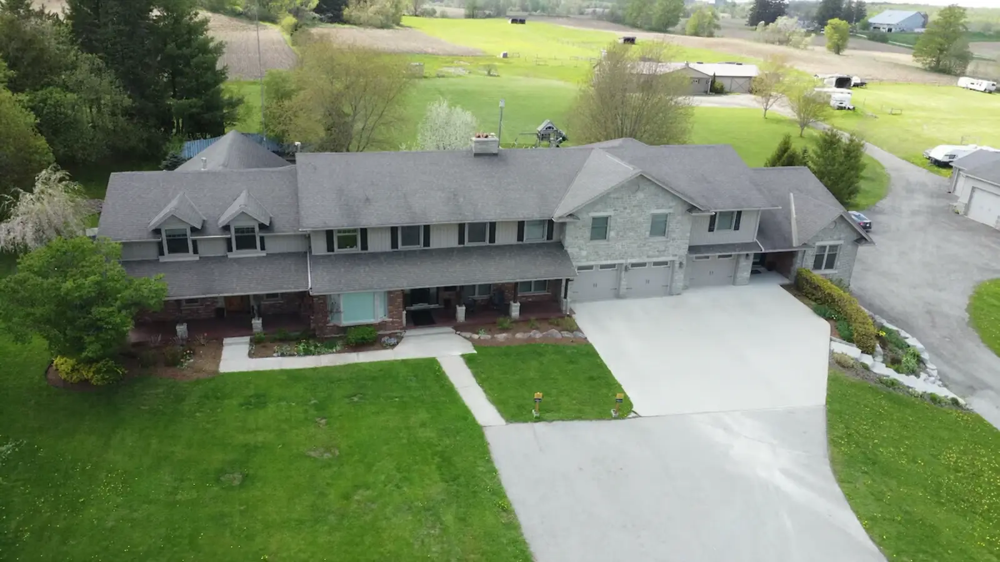
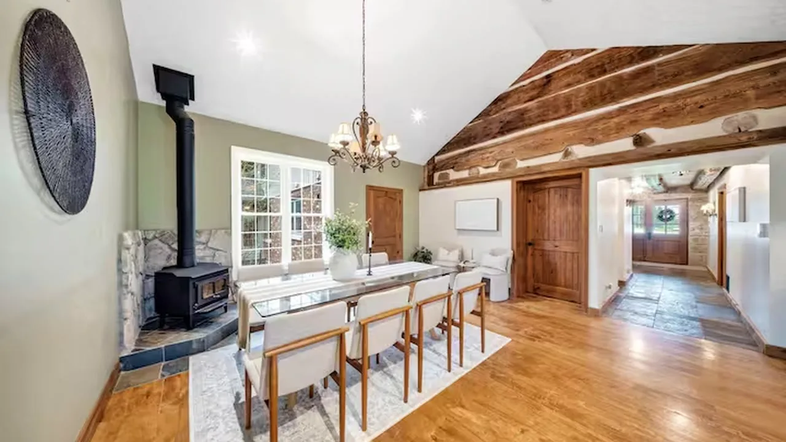
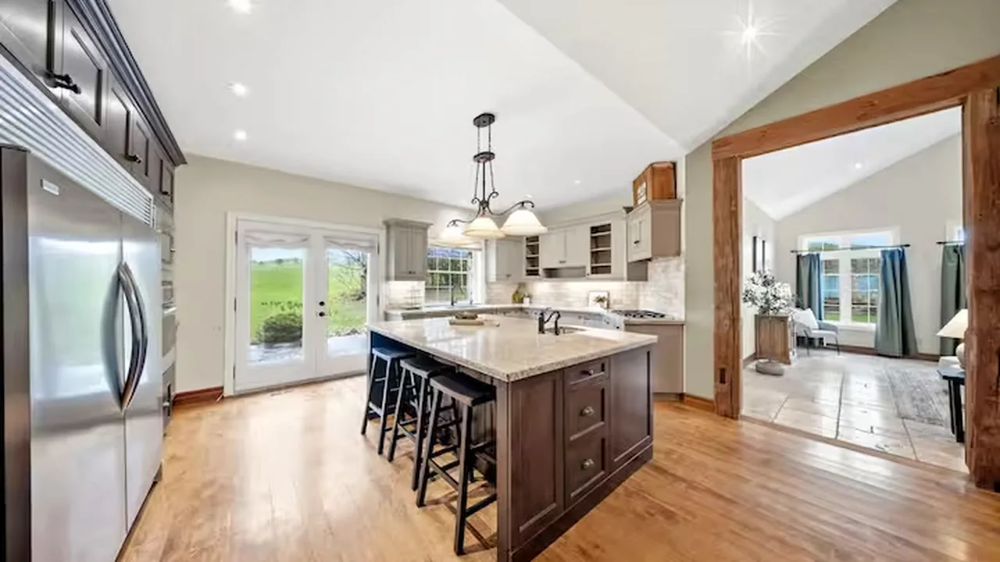
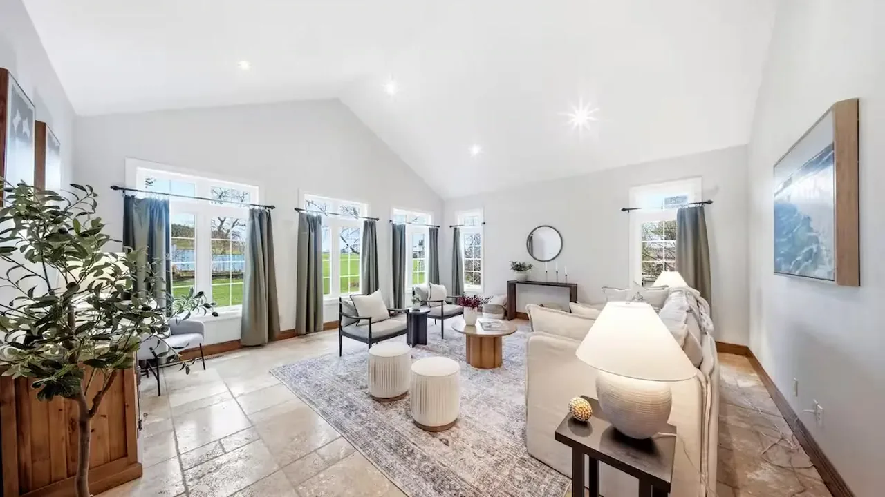
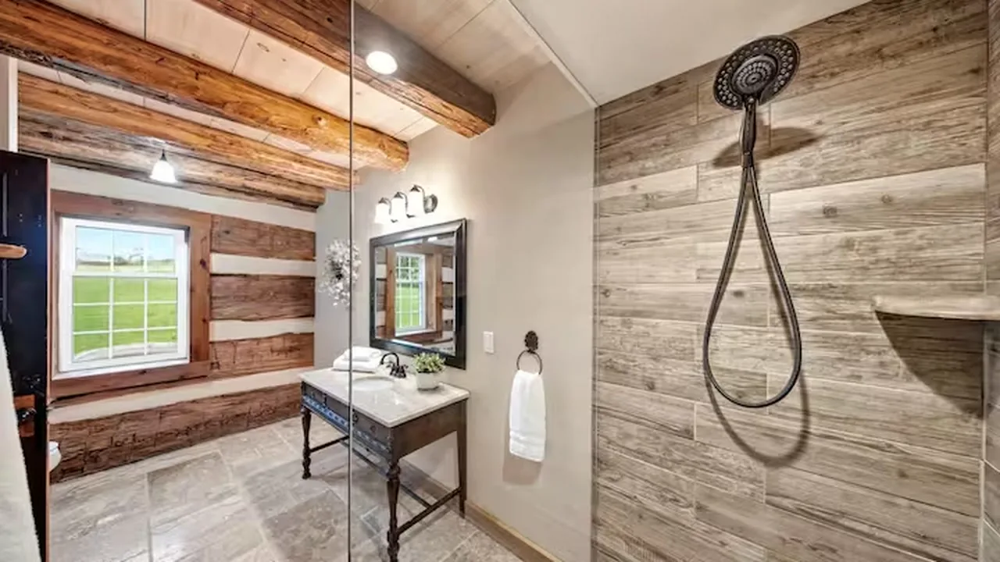
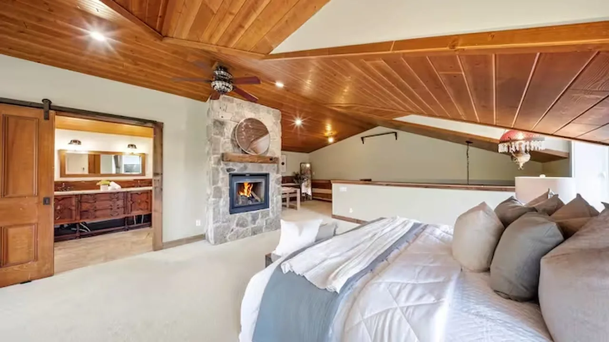
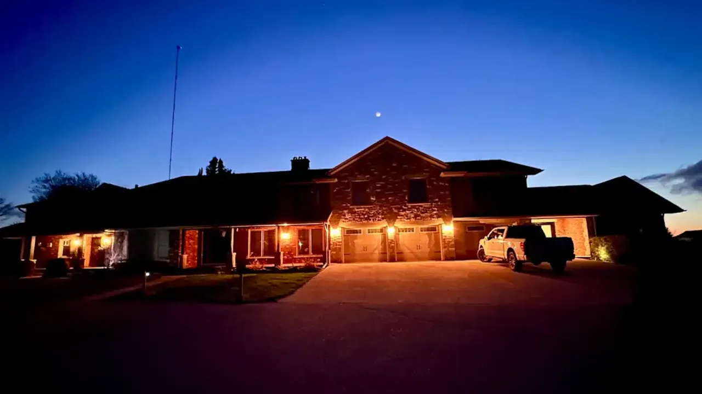
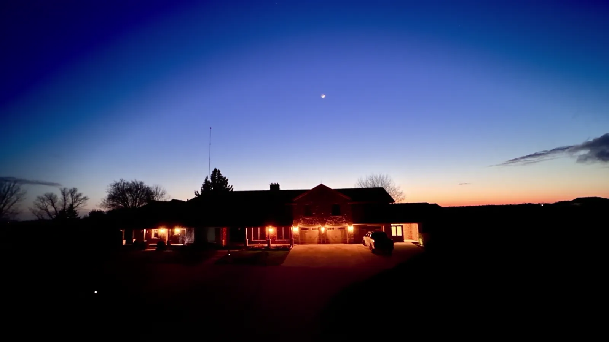

The Ridge @ Team Ranch
Waterloo Region, Ontario
8 guests 3 bedrooms 3 baths
A restored log home in open countryside, a short drive from St. Jacobs.

The dining area
Original hand-hewn beams.
A wood stove on a stone hearth.

The kitchen
A fully equipped gourmet kitchen.

The living room
Quiet mornings overlooking the fields.

The bathrooms
Spa-style bathrooms with walk-in showers and a clawfoot tub.

The loft bedroom
Three bedrooms. King, queen and double.

After dark
A private hot tub.
Two patios and a firepit. Firewood supplied.

Stay at The Ridge
A short drive from the St. Jacobs Farmers’ Market, village galleries and craft breweries.
Check availability on Airbnb (opens in a new tab)
Up to 8 guests Wifi Free parking Pets allowed